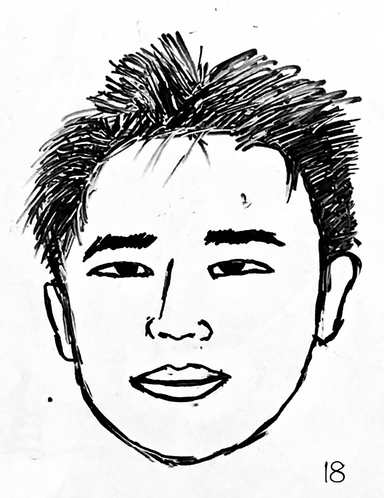

Cheng Chen(陈诚)

Institute of Politics and Economics
Nanjing Audit University
chenc2014@gmail.com
chenc2014@gmail.com
Curriculum Vitae
Publications
-
"The effect of sibship size on educational attainment of the first born: Evidence from three decennial censuses of Taiwan"
Cheng Chen, Sabrina Terrizzi, Shin-Yi Chou, and Hsien-Ming Lien, Empirical Economic, 61: 2173–2204, Aug 2021.
-
"The relationship between family size and parents' labor supply and occupational prestige: Evidence from Taiwan and Mainland China"
Cheng Chen, Wangyang Zhao, Shin-Yi Chou, and Hsien-Ming Lien, China Economic Review, 66: 101596, Apr 2021.
-
"The quantity of education and preference for sons: Evidence from Taiwan's compulsory education reform"
Cheng Chen, Shin-Yi Chou, Lea Gimenez Duarte, and Jin-Tan Liu, China Economic Review, 59: 101369, Feb 2020.
-
"The effect of the second child on the nutrition intakes and the anthropometric outcomes of the first child: Evidence from China's one-child policy"
Cheng Chen, Shin-Yi Chou, Cheng Wang, and Wangyang Zhao, The B.E. Journal of Economic Analysis & Policy, 20(1): 20180340, Jan 2020.
-
"The effect of household technology on weight and health outcomes among Chinese adults: Evidence from China's home appliances going to the countryside policy"
Cheng Chen, Shin-Yi Chou and Robert J. Thornton, Journal of Human Capital, 9(3): 364–401, Sep 2015.
Papers Under Review
-
"The long-term health effects of early-life malaria exposure: Evidence from Taiwan's malaria eradication in the 1950s," with Shin-Yi Chou, Hsien-Ming Lien, and Jin-Tan Liu, Conditionally Appected at American Journal of Health Economics
-
"Pledge your faith in love? Estimating household risk- and benefit-sharing mechanisms using two natural experiments in China," with Wei Fu and Shin-Yi Chou, R&R at Economic Development and Cultural Change
-
"Is owning a house always better than renting? New evidence of the quantity-quality trade-off from the United States," with Ying-Min Kuo, Under Review at Southern Economic Journal
-
"Culture, policy obedience, and virus spread: Evidence from the anti-COVID efforts in the United States," with Wei Fu, Ying-Min Kuo, and Yuanting Wu, Under Review at Journal of Population Economics
Working Papers
-
"Dust storm and birth outcomes: Evidence from Taiwan," with Shin-Yi Chou, Hsien-Ming Lien, and Muzhe Yang, Current Draft May 2022
-
"How grandparent co-residence affects the relationship between fertility and parents' labor market choice: Evidence from China," with Wangyang Zhao and Ying-Min Kuo, Current Draft May 2022
-
"Why are some people more sensitive to unfavorable news of COVID-19 vaccine? Evidence from the Johnson & Johnson vaccine suspension," with Wei Fu and Ying-Min Kuo, Current Draft Feb 2022
-
"Wildfires and infant health at birth: Evidence from New Jersey," with Li Zeng and Shin-Yi Chou, Current Draft Dec 2020
Last update: May 2, 2022